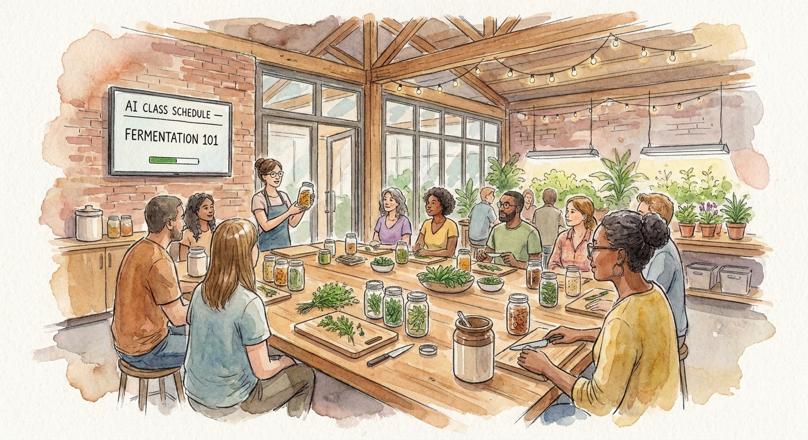
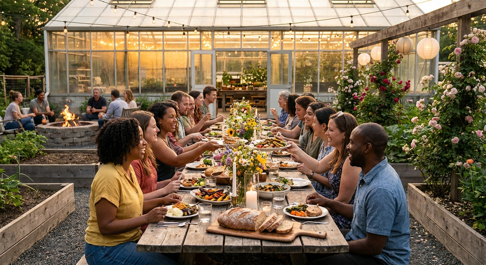
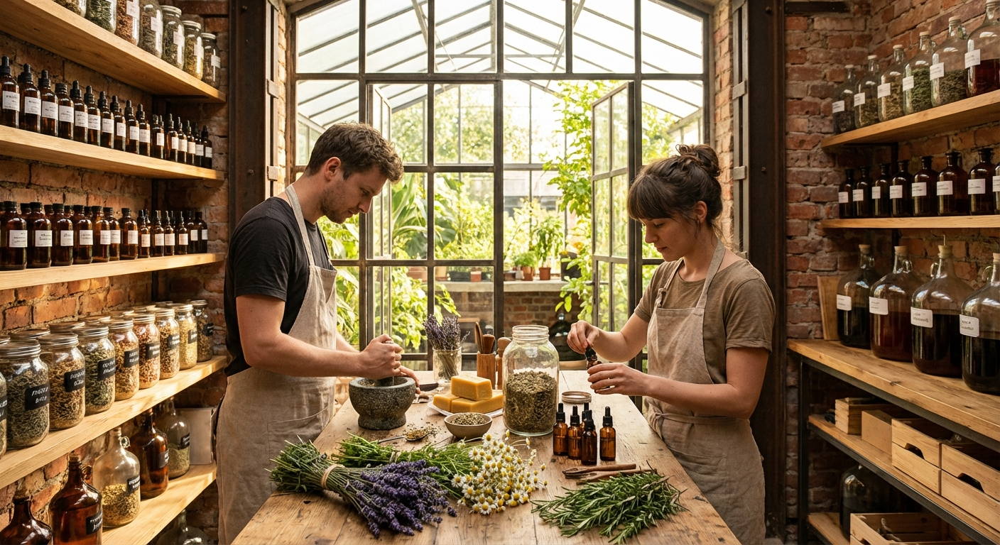

Sponic Gardens creates natively AI-managed spaces that promote socialization in a healthy, inspiring and productive manner. Sponic Gardens optimizes for the long-term growth and satisfaction of its members, with a focus on ensuring that the AI is working for their best interests as individuals.
The Idea
AI-Enhanced Spaces for Real Human Connection
Sponic Gardens creates AI-enhanced spaces where people can socialize in a radically beneficial community. The venue is built around botanical cultivation, fitness, thermal wellness, music, and community food — with artificial intelligence quietly enhancing every aspect of the environment.
The AI doesn't just run operations. Its goal is to optimize for long-term growth and lifestyle satisfaction — learning what makes each member's experience better over time, tuning the environment to promote well-being, and helping the community cultivate something that compounds with every visit.
Long-term optimization means the AI gets better the longer you're a member. It learns what works — for you, for the plants, for the community.
Core Philosophy
Inspiring. Surrounded by living, growing things — curated light, sound, and atmosphere that lifts your mood the moment you walk in. Healthy. Gardening, fitness, thermal wellness, and real food grown on-site. Productive. Every visit produces something — a harvest, a skill learned, a connection made, a plant nurtured toward its next stage. The AI ties all three together, optimizing the environment so that each visit is better than the last.
The AI is invisible to the member but omnipresent in the infrastructure. It manages irrigation, tunes the music to the energy of the room, schedules classes around demand, optimizes what gets planted and when, and continuously learns from every sensor reading and every piece of member feedback. The result is a space that feels effortlessly good — because intelligence is woven into its fabric.
A place where plants and people flourish together, where every element of the environment — light, sound, temperature, soil, food, activity — is being continuously tuned by an intelligence that gets better every day.
The Experience
What You Do at Sponic Gardens
A visit weaves together gardening, fitness, thermal wellness, food, music, and community — in whatever combination suits the day. The AI handles the logistics; you just show up.
Cultivate
Guided gardening sessions where you plant, tend, and harvest. The AI manages the cultivation plan — what to plant, when to water, when to harvest — and enlists members to make the decisions that matter. Your produce flows directly into the on-site food service.
The Garden Show — gamified cultivation
Members photograph their best plants and arrangements throughout the growing cycle. On a regular cadence, the community hosts The Garden Show: submissions displayed on facility screens, community voting across rotating seasonal categories, prizes for top entries. A built-in social loop that makes cultivation competitive and celebratory.
Move
Hot yoga studio, dance studio, and open movement areas — indoor and outdoor. AI schedules classes, sets music and lighting presets per activity, and uses opt-in fitness data to tune intensity over time.
Restore
Saunas, steam room, cold plunges, hot tub, and cool pool. The AI suggests personalized contrast therapy protocols and manages temperatures, session timing, and capacity — while water quality sensors run continuously.
Vibe
Pervasive high-quality sound throughout the facility. AI-controlled audio zones adapt to activity, time of day, and crowd energy — calming in spa zones, energizing in dance, focused in the greenhouse. The music is also tuned for plant stimulation.

Learn
Workshops, talks, and hands-on skill shares — from composting and growing to AI coding, building, and distilling. The AI matches you with sessions based on community interests and skill levels, sourcing leaders or AI lead tracks. The app allows you to monitor your progress across disciplines so you can go deeper over time.

Connect
Community dinners, firepit gatherings, collaborative projects, and spontaneous encounters designed into the space. The AI quietly facilitates — seating people with shared interests, surfacing collaboration opportunities, and scheduling events around the natural rhythms of the community.
Commerce
The Farmers-Builders Market
Sponic Gardens operates an always-on IRL commerce infrastructure that makes it radically simple for members to sell what they grow, cook, brew, craft, and build. No business license required, no upfront cost, no logistics headaches — just show up with something worth selling.
The market removes every barrier between "I made this" and "someone bought it." Sponic Gardens handles payments, point-of-sale, marketing, and compliance.
The infrastructure covers everything a seller needs: equipped vendor stations, billing and payments, digital menus and signage, inventory tracking, marketing through the member app, and AI-optimized scheduling that puts the right sellers in front of the right buyers at the right time.
Handmade goods, jewelry, ceramics, textiles, prints
🔧
Built Things
3D prints, CNC work, garden tools, custom hardware, furniture
The market closes the loop: members grow produce in the greenhouse, transform it in the apothecary or kitchen, and sell it to other members — all without leaving the building. From soil to sale under one roof.
What Sponic Gardens Provides
Equipped vendor stations with power, water, and display space
Point-of-sale and cashless payment processing
Digital menus, pricing displays, and in-app listings
Marketing to the member base via app notifications
AI-optimized scheduling based on demand patterns
Food safety and compliance infrastructure
What Sellers Bring
Their product and their craft
That's it
No upfront fees. Sponic Gardens takes a commission on sales. The AI handles everything else — from suggesting optimal selling times to tracking what's popular and what members are asking for.
How the AI optimizes the market
The AI tracks sales data, waste levels, queue lengths, member ratings, and purchase patterns to continuously optimize the market. It suggests which sellers should be active on which days, identifies gaps in the offering ("members are searching for vegan options on Saturdays"), and surfaces trending products. Sellers get a dashboard showing what's working and recommendations for what to try next.
The Apothecary — botanical products made on-site

A working apothecary where members learn to grow, harvest, and transform medicinal plants into tinctures, essential oils, salves, and herbal teas. From lavender sleep aids to turmeric wellness shots — every product is made on-site from plants grown on-site. Products can be sold through the Farmers-Builders Market.
The Maker Space — fabrication for builders
3D printers, CNC routers, and design workstations. Members fabricate custom garden infrastructure, functional tools, art pieces, and products for sale. Vine trellis brackets, hanging planter frames, sensor housings, Garden Show trophies — things that become part of the living facility or go home with a buyer.
Intelligence
The AI That Runs the Garden
The facility is designed from the ground up to be AI-managed. Not a booking system bolted onto a spa — a unified platform where every system is instrumented, every signal is captured, and the AI continuously optimizes for long-term growth and lifestyle satisfaction across both people and plants.
The AI operates as a closed-loop control system: observe the environment through hundreds of sensors, reason about what to change, actuate the physical systems, then learn from the results. Over weeks and months, it converges on configurations that demonstrably improve member well-being and plant health.
What the AI controls
Irrigation schedules and nutrient dosing. Grow lighting spectra and circadian mood lighting. HVAC, ventilation, and greenhouse climate. Music playlists per zone. Class scheduling and instructor allocation. Vendor rotation and menu optimization. Pest detection via computer vision. Energy load balancing. Supply reordering. Social media content strategy. Wayfinding displays and PA announcements. Every system is paired with feedback sensors so the AI can measure what works.
The experiment engine
The AI continuously runs small, safe experiments across every domain: change one variable (playlist genre, sauna temperature, lighting warmth), run it for a fixed window, evaluate the metric (survey scores, occupancy duration, rebooking rate), keep or revert. Over time, it autonomously discovers winning combinations — without anyone manually tuning.
App analytics, booking data, sales, attendance, vendor performance, energy usage — every digital interaction is a data point.
Human Layer
Quick contextual micro-surveys after each activity. "How much lift did this give you?" The AI correlates sensor patterns with human-reported value.
Trust
Your Data, Your Agent
Operating under EU GDPR, every member gets an AI-powered privacy agent that makes exercising your data rights as easy as asking a question. "What data do you have on me?" "Delete my visit history." "Stop using my fitness data." Executed in real-time — no forms, no waiting.
How we collect — granular consent
Tiered consent model: choose your data sharing level from "minimum" (anonymous occupancy only) to "full" (personalized recommendations, fitness integration). Every tier is fully functional. Camera systems use on-device edge processing for occupancy counting — no facial recognition, no individual tracking. Audio sensors measure ambient energy levels only — content is never recorded.
The Space
Built for Cultivation
A custom-built indoor-outdoor warehouse-greenhouse hybrid, designed from the ground up to be maximally AI-monitored while feeling like a place you genuinely want to spend time.
The first Sponic Gardens launches in Warsaw with cohorts of founding members. Phased rollout: core loops first (plants + music + fitness + spa), then full capacity as the AI learns from real data.
Warsaw chosen for vibrant wellness culture, affordable operational costs, and growing international community.
Membership
€40 admission for 1–4 hours
€10 per additional hour
Classes, workshops, and premium experiences a la carte
Food and drink from on-site vendors
Vision
Why This Matters
Most social spaces treat technology as an afterthought. Sponic Gardens inverts this: the AI platform is the foundation, and the physical space is designed around what intelligence can measure, optimize, and learn from. The result is a new category — an AI-native social club designed from the ground up to promote human and botanical flourishing.
Sponic Gardens is built on the belief that the best things — health, community, skill, beauty — grow over time. The AI is there to make sure that growth compounds: learning what works, discarding what doesn't, and continuously tuning every element of the space toward long-term satisfaction for every member and every plant in the building.